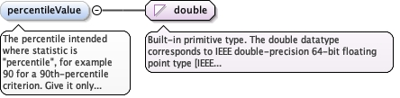

How several values are reduced to the single value compared againstthe limit. statisticScope states what the values are gathered over.Omit where the criterion applies to each value individually. Valuescome from the enumerated list, or "Other: xx", where xx is auser-defined term whose meaning differs from every listed value (nota synonym of one).
<element minOccurs="0" name="statistic" type="diggs:StatisticEnumExtType"><annotation><documentation>How several values are reduced to the single value compared against the limit. statisticScope states what the values are gathered over. Omit where the criterion applies to each value individually. Values come from the enumerated list, or "Other: xx", where xx is a user-defined term whose meaning differs from every listed value (not a synonym of one).</documentation></annotation></element>
The percentile intended where statistic is "percentile", for example90 for a 90th-percentile criterion. Give it only with thatstatistic.
Diagram

Type
double
Properties
content
simple
minOccurs
0
Source
<element minOccurs="0" name="percentileValue" type="double"><annotation><documentation>The percentile intended where statistic is "percentile", for example 90 for a 90th-percentile criterion. Give it only with that statistic.</documentation></annotation></element>
What the statistic is gathered over: the values within one record(series), the evidence for one subject (evidence), or all subjectsthe criterion governs (population). Required whenever statistic isgiven. Values come from the enumerated list.
The values within one record - for example the largest settlement in onemonitoring record, or the slope of one load-test curve.
enumeration
evidence
The evidence for one subject - for example the mean of the cylinders takenfrom one grout batch.
enumeration
population
All subjects the criterion governs - for example 95% of the columns in azone, or a testing frequency across a program.
Source
<element minOccurs="0" name="statisticScope" type="diggs:StatisticScopeEnumType"><annotation><documentation>What the statistic is gathered over: the values within one record (series), the evidence for one subject (evidence), or all subjects the criterion governs (population). Required whenever statistic is given. Values come from the enumerated list.</documentation></annotation></element>
The comparison applied between the evaluated value and the limit.Required: a limit without a comparison states no requirement. Valuescome from the enumerated list.
Within an inclusive range. Use with a limit that populates parameterMinValueand parameterMaxValue rather than parameterValue - this is the operator thatcarries a tolerance band such as "0.25 to 0.75 in".
Source
<element minOccurs="1" maxOccurs="1" name="operator" type="diggs:CriterionOperatorEnumType"><annotation><documentation>The comparison applied between the evaluated value and the limit. Required: a limit without a comparison states no requirement. Values come from the enumerated list.</documentation></annotation></element>
The subject this criterion governs, and the value or range theevaluated value is compared against. The subject is thedictionary-bound parameterName of a diggs:AuthorizedParameter ordiggs:ProvenancedParameter; a free-text diggs:Parameter is notallowed. The value may be a single value (parameterValue) or a band(parameterMinValue and parameterMaxValue, with operator "within").
<element minOccurs="1" maxOccurs="1" name="limit" type="diggs:AuthorizedParameterPropertyType"><annotation><documentation>The subject this criterion governs, and the value or range the evaluated value is compared against. The subject is the dictionary-bound parameterName of a diggs:AuthorizedParameter or diggs:ProvenancedParameter; a free-text diggs:Parameter is not allowed. The value may be a single value (parameterValue) or a band (parameterMinValue and parameterMaxValue, with operator "within").</documentation></annotation></element>
The unit of work the criterion is assessed over, for example perelement, per unit cell, per 100 ft, or as a multiple of diameter.Distinct from the scope of the specification, which says whichfeatures are governed. Use the DIGGS dictionary basis.xml for thelist of values.
<element minOccurs="0" name="basis" type="gml:CodeType"><annotation><documentation>The unit of work the criterion is assessed over, for example per element, per unit cell, per 100 ft, or as a multiple of diameter. Distinct from the scope of the specification, which says which features are governed. Use the DIGGS dictionary basis.xml for the list of values.</documentation></annotation></element>
The reference length over which a gradient or rate-of-changecriterion is assessed, where basis expresses a quantity per unitlength. With limit it lets a criterion state a gradient such as 0.5in per 100 ft.
<element minOccurs="0" name="baseLength" type="diggs:LengthMeasureType"><annotation><documentation>The reference length over which a gradient or rate-of-change criterion is assessed, where basis expresses a quantity per unit length. With limit it lets a criterion state a gradient such as 0.5 in per 100 ft.</documentation></annotation></element>
A condition evidence must meet to count toward this criterion: acoded parameter and its value or range, for example specimen age 28d, elapsed time 1 to 10 min, or depth below the platform. Evidencecounts only if it meets every condition given. Omit where allevidence of the criterion's subject counts.
<element minOccurs="0" maxOccurs="unbounded" name="evidenceCondition" type="diggs:AuthorizedParameterPropertyType"><annotation><documentation>A condition evidence must meet to count toward this criterion: a coded parameter and its value or range, for example specimen age 28 d, elapsed time 1 to 10 min, or depth below the platform. Evidence counts only if it meets every condition given. Omit where all evidence of the criterion's subject counts.</documentation></annotation></element>
A reference to the published standard or project clause thiscriterion was taken from. The target is a diggs:Specification, thecomponent object that cites a standard, not a program specification.
The gml:identifier value of the referenced feature, as a fully qualifiedvalue. It gives an alternative to the gml:id in xlink:href for findingthe referenced feature, mainly to reference a feature by a globallyunique identifier and where naming conflicts occur with gml:id whenaccessing data in external files.
<element minOccurs="0" maxOccurs="1" name="sourceSpecRef" type="diggs:FeatureReferenceType"><annotation><appinfo source="urn:x-gml:targetElement">diggs:Specification</appinfo><documentation>A reference to the published standard or project clause this criterion was taken from. The target is a diggs:Specification, the component object that cites a standard, not a program specification.</documentation></annotation></element>
Complex Type diggs:AbstractAcceptanceCriterionType
Namespace
http://diggsml.org/schemas/3
Annotations
Abstract base type for acceptance criteria: which evidence counts, how it is reducedto one value (statistic over statisticScope), the comparison (operator) and thelimit. The subject is named by the parameterName of limit. The criterion names noevidence of its own; the evidence it is evaluated against is cited by thediggs:AcceptanceCheck that applies it.
Database handle for the object. It is of XML type ID, so is constrained to beunique in the XML document within which it occurs. An external identifier for the object inthe form of a URI may be constructed using standard XML and XPointer methods. This is doneby concatenating the URI for the document, a fragment separator, and the value of the idattribute.
Source
<complexType name="AbstractAcceptanceCriterionType"><annotation><documentation>Abstract base type for acceptance criteria: which evidence counts, how it is reduced to one value (statistic over statisticScope), the comparison (operator) and the limit. The subject is named by the parameterName of limit. The criterion names no evidence of its own; the evidence it is evaluated against is cited by the diggs:AcceptanceCheck that applies it.</documentation></annotation><complexContent><extension base="diggs:AbstractProgramSpecificationType"><sequence><element minOccurs="0" name="statistic" type="diggs:StatisticEnumExtType"><annotation><documentation>How several values are reduced to the single value compared against the limit. statisticScope states what the values are gathered over. Omit where the criterion applies to each value individually. Values come from the enumerated list, or "Other: xx", where xx is a user-defined term whose meaning differs from every listed value (not a synonym of one).</documentation></annotation></element><element minOccurs="0" name="percentileValue" type="double"><annotation><documentation>The percentile intended where statistic is "percentile", for example 90 for a 90th-percentile criterion. Give it only with that statistic.</documentation></annotation></element><element minOccurs="0" name="statisticScope" type="diggs:StatisticScopeEnumType"><annotation><documentation>What the statistic is gathered over: the values within one record (series), the evidence for one subject (evidence), or all subjects the criterion governs (population). Required whenever statistic is given. Values come from the enumerated list.</documentation></annotation></element><element minOccurs="1" maxOccurs="1" name="operator" type="diggs:CriterionOperatorEnumType"><annotation><documentation>The comparison applied between the evaluated value and the limit. Required: a limit without a comparison states no requirement. Values come from the enumerated list.</documentation></annotation></element><element minOccurs="1" maxOccurs="1" name="limit" type="diggs:AuthorizedParameterPropertyType"><annotation><documentation>The subject this criterion governs, and the value or range the evaluated value is compared against. The subject is the dictionary-bound parameterName of a diggs:AuthorizedParameter or diggs:ProvenancedParameter; a free-text diggs:Parameter is not allowed. The value may be a single value (parameterValue) or a band (parameterMinValue and parameterMaxValue, with operator "within").</documentation></annotation></element><element minOccurs="0" name="basis" type="gml:CodeType"><annotation><documentation>The unit of work the criterion is assessed over, for example per element, per unit cell, per 100 ft, or as a multiple of diameter. Distinct from the scope of the specification, which says which features are governed. Use the DIGGS dictionary basis.xml for the list of values.</documentation></annotation></element><element minOccurs="0" name="baseLength" type="diggs:LengthMeasureType"><annotation><documentation>The reference length over which a gradient or rate-of-change criterion is assessed, where basis expresses a quantity per unit length. With limit it lets a criterion state a gradient such as 0.5 in per 100 ft.</documentation></annotation></element><element minOccurs="0" maxOccurs="unbounded" name="evidenceCondition" type="diggs:AuthorizedParameterPropertyType"><annotation><documentation>A condition evidence must meet to count toward this criterion: a coded parameter and its value or range, for example specimen age 28 d, elapsed time 1 to 10 min, or depth below the platform. Evidence counts only if it meets every condition given. Omit where all evidence of the criterion's subject counts.</documentation></annotation></element><element minOccurs="0" maxOccurs="1" name="sourceSpecRef" type="diggs:FeatureReferenceType"><annotation><appinfo source="urn:x-gml:targetElement">diggs:Specification</appinfo><documentation>A reference to the published standard or project clause this criterion was taken from. The target is a diggs:Specification, the component object that cites a standard, not a program specification.</documentation></annotation></element><element minOccurs="0" ref="diggs:partOfSpecificationRef"/></sequence></extension></complexContent></complexType>